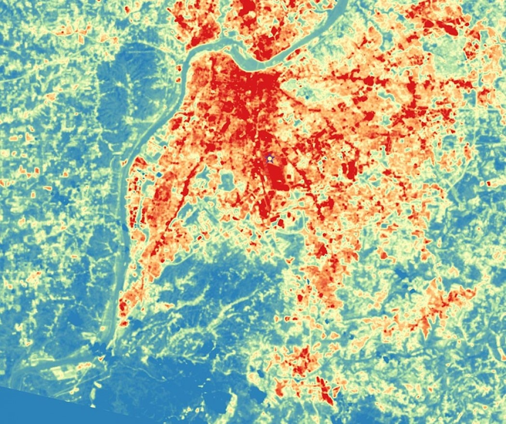

Rapid urbanization has led to the replacement of natural surfaces with materials such as concrete and asphalt, which absorb and retain heat. This results in the Urban Heat Island (UHI) effect, where city temperatures can be up to 7°C higher than nearby rural areas.

The increase in temperature creates a feedback loop. Higher temperatures lead to increased use of air conditioning systems, which consume large amounts of electricity and release additional heat into the environment. This further intensifies the UHI effect and contributes to environmental and economic challenges.
Although urban green spaces such as parks and green roofs are known to reduce temperatures through shading and evapotranspiration, their implementation is often not optimized. Most urban planning approaches focus on increasing the quantity of green spaces rather than strategically placing them where they can have the greatest impact.